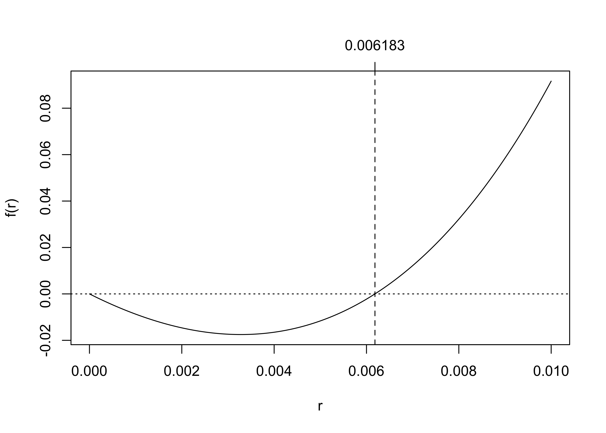

x <- c(16.10, 11.86, 14.95, 8.84, 17.03, 11.65, 8.64, 10.52, 10.68, 6.52)
n <- length(x)
val <- 0
for(i in 1:n){
val <- val + x[i]
}
val[1] 116.79$$
$$
The while uses the same logic as the for loop, but it is for the special situation in which one does not know how many times one will need to execute the commands inside the loop. When would this be the case?
It turns out that in statistics this is very often the case. Many estimators in statistics are computed as the minimizers or maximizers of complicated functions involving observed data; in many cases it is not possible to compute the minimizers or maximizers according to any formula. One must instead search for the minimizer or maximizer with what are called numerical methods. These usually involve selecting an arbitrary initial guess and then making updates to the guess in such a way that one can guarantee that the guess will approach the minimizer or maximizer eventually. In this situation, the number of times one will need to update the initial guess before it can be considered close to converging upon its target is unknown before one begins making the updates. So come convergence criterion is specified to stop the iteration at some point.
Before diving into an example of this, let’s learn the syntax of the while loop.
The syntax of a while loop takes the form while(<condition>){<commands>}. As long as the condition is TRUE, the commands will keep executing. One must be careful with while loops, because if you write a condition which is always TRUE, the loop will never stop; you will have to terminate your R session in order to make it stop!
Recall our for loop for computing a sum:
x <- c(16.10, 11.86, 14.95, 8.84, 17.03, 11.65, 8.64, 10.52, 10.68, 6.52)
n <- length(x)
val <- 0
for(i in 1:n){
val <- val + x[i]
}
val[1] 116.79We can rewrite this as a while loop in this way:
n <- length(x)
val <- 0
i <- 1
while(i <= n){
val <- val + x[i]
i <- i + 1
}
val[1] 116.79In the above, the commands in the curly braces {...} are executed as long as the index i is less than or equal to n, and we explicitly increment the index, i <- i + 1 as part of our commands. The loop goes through all the same steps. If we forget to increment i the loop will never stop!
The above example does not properly show the value of the while loop, which is, as we have said, that it can be sent looping without being told ahead of time how many iterations it will have to loop. Let’s look for a more compelling example of its usefulness!
Another useful application of the while loop is to perform division. Regarding division as repeated subtraction, we can use the while loop to count how many times a divisor can be subtracted from a dividend (the dividend is the number to be divided). That is, if we want to do the division \(D \div x\), we can use a while loop to see how many times we can subtract \(x\) from \(D\).
# function to perform division and give the remainder
divr <- function(D,x){
Q <- 0 # this will be the quotient
while(D >= x){# as long as we can still subtract x from D...
D <- D - x
Q <- Q + 1
}
output <- list(quotient = Q,
remainder = D) # the remainder is what is left of D
return(output)
}
# demonstrate
divr(D = 126, x = 12)$quotient
[1] 10
$remainder
[1] 6divr(D = 1024, x = 16)$quotient
[1] 64
$remainder
[1] 0Suppose you borrow an amount of money \(B_0\) at monthly interest rate \(r\) and pay it off with monthly payments in the amount \(p\). If you make the first payment after one month has passed, you will, after making this payment, owe the amount \(B_1 = B_0(1+r) - p\), and the amount of money you will owe after the \(n\)th payment is given by the recursion \[ B_{n+1} = B_n(1 + r) - p \] for \(n = 1,2,\dots\) How many months will it take to pay off the loan? We can write a while loop to answer this question.
B <- 200000 # amount borrowed, yikes!
r <- 0.05/12 # 5% annual interest rate. Divide by 12 to get monthly rate.
p <- 1500 # payments of 1000
m <- 0 # initialize month counter to 0
while(B > 0){
B <- B*(1 + r) - p
m <- m + 1
}
# number of months it will take to pay off this loan:
m[1] 196The above loop executes the commands in {...} as long as the remaining balance B is greater than zero. The last payment will make the balance equal to or less than zero and the loop will stop.
For the record, if \(m\) is the number of months needed to pay off the loan, we can compute \(m\) directly by using “straight-up math” with the formula \[ m = \lceil \log(p/(p - rB_0))/\log(1+r) \rceil, \] where \(\lceil x \rceil\) represents the smallest integer greater than or equal to \(x\). See:
B <- 200000 # amount borrowed
m <- ceiling(log(p/(p - r*B))/log(1+r))
m[1] 196So the while loop is not really necessary for solving this problem. It is, however, needed for the next example.
Newton’s method, also known as the Newton-Raphson algorithm, is an algorithm for finding a root of a function, i.e. where the function is equal to zero. Let \(r\) denote a root of a function \(f\) so that \(f(r) = 0\). Newton’s method for finding \(r\) is to choose an initial guess \(x_1\) for \(r\) and make the updates \[ x_{n+1} = x_n - \frac{f(x_n)}{f'(x_n)} \] for \(n = 1,2,\dots\), where \(f'\) is the derivative of \(f\). Under certain conditions the sequence \(x_n\) will converge to \(r\) (to learn about when it might not work, see Section 4.9 of Stewart (2003)).
Suppose a car salesman offers to sell you a car for a certain amount in cash or for a numb of monthly payments of a certain amount. You would like to know what monthly interest rate you would be charged if you choose to make the monthly payments. Consulting your financial math notes, you find that paying off an amount \(P\) with \(n\) monthly payments of amount \(p\), you end up paying a monthly interest rate equal to \(r\), which is given by the solution to the equation \[ \frac{P}{p}(1+r)^nr - (1+r)^n + 1 = 0. \] The code below uses a while loop to implement Newton’s method for finding the root \(r\).
P <- 20000
p <- 400
n <- 60
f <- function(r,n,P,p) P/p*(1 + r)^n*r - (1+r)^n + 1
df <- function(r,n,P,p) P/p*(n*(1 + r)^(n-1)*r + (1+r)^n) - n*(1+r)^(n-1)
r <- 0.05 # initial guess for the monthly interest rate
conv <- FALSE # initialize this as false so that loop can begin
while(!conv){ # commands will execute as long as it has not converged
r0 <- r # store the current value before updating it
r <- r - f(r,n,P,p)/df(r,n,P,p) # this is the Newton update
conv <- abs(r - r0) < 1e-5 # convergence criterion
}
# the converged value
r[1] 0.006183413# convert monthly interest rate to annual interest rate
r*12[1] 0.07420096In the above, we define \(P\), \(p\), and \(n\) according to the given numbers. Then we define two functions, f() which is the function \(f\) of which we want to find the root and df() which is \(f'\), the derivative of \(f\).
The loop executes the commands inside {...} as along as !conv is TRUE, that is as long as conv is FALSE. So we could read this as “while not converged, do such and such”. Inside the curly braces, we see that the current value of r is stored in r0. This is so that we can compare the updated r with its previous value; note that our update overwrites r with a new value, so if we did not save the value of r somewhere we would lose it. This comparison is part of our convergence criterion. If the update changed r by an amount less that 1e-5, which is \(1\times 10^{-5}\), then conv is set equal to TRUE which will cause the loop to stop executing.
Below is a plot of the function f defined in the code. The plot shows that Newton’s algorithm was able to find the root.
rseq <- seq(0,0.01,length = 200)
plot(f(rseq,n,P,p)~rseq,type = "l",
xlab = "r",
ylab = "f(r)")
abline(h = 0, lty = 3)
abline(v = r, lty = 2)
axis(side = 3, at = r, labels = round(r,6))
Practice writing code and reading code with the following exercises.
ctbin <- function(a){
n <- 2^a
M <- matrix(0,n,a)
for(i in 0:(n-1)){
m <- i
j <- 0
while(m > 0){
M[i+1,a - j] <- m %% 2
m <- floor(m / 2)
j <- j + 1
}
}
return(M)
}
ctbin(3)